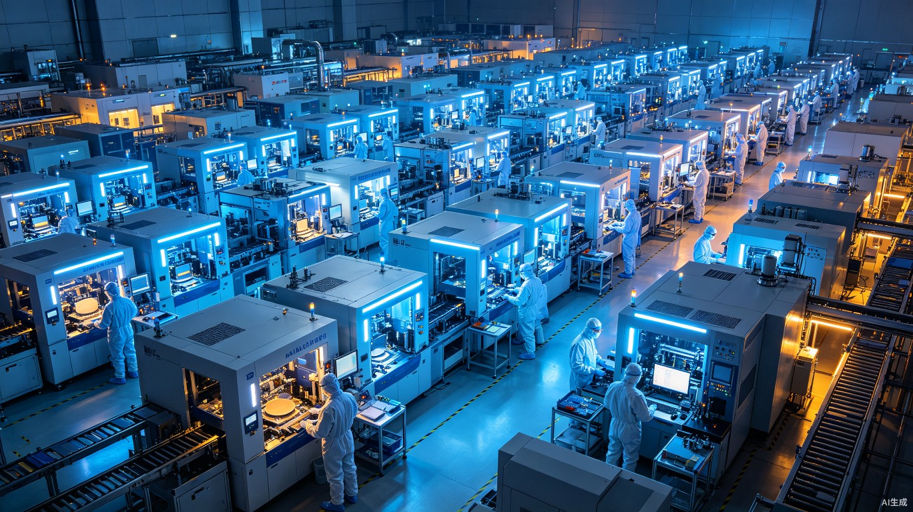
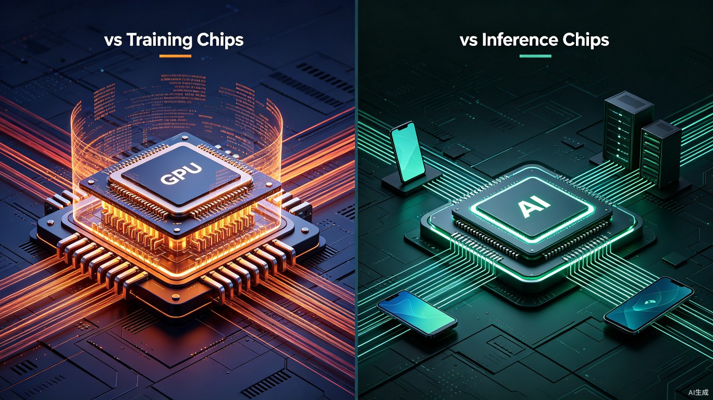

两周，三颗芯片，AI行业换了个赛道
6月的最后一周，OpenAI发布了自己的第一颗芯片。7月初，Anthropic被曝正在评估自研芯片。7月7日，路透社独家曝出DeepSeek也在造芯片，已经秘密推进了一年。
两周，三颗芯片。全球最值钱的三家AI模型公司，在同一时间做了同一件事。这个密度很难说是巧合。
坦率地讲，模型竞赛的高潮可能真的已经过去了。下一场竞赛，比的不是谁的参数更大，而是谁能把模型和芯片一起做。
两周，三颗芯片
6月底
OpenAI发布首款自研推理芯片Jalapeño，与博通合作，从设计到流片仅用9个月
7月初
Anthropic被曝进入定制AI芯片早期研发，正与三星洽谈制造合作
7月7日
DeepSeek被曝正在自研AI推理芯片，已秘密推进约一年，正对接芯片设计、代工和存储厂商
这不是三家公司各自的决定，是整个行业在发生结构性的变化。
为什么都在造芯
表面上各家理由不同，底层逻辑却出奇一致。我把几家的动机拆开来看，你会发现四条主线在同时收紧。
第一，推理成本正在吞噬利润。
Anthropic CEO Dario Amodei说过一句让人倒吸冷气的话，"如果我的收入无法达到1万亿美元，一旦我购买了那么多的算力，地球上没有任何力量能阻止我破产。"
这不是夸张。Anthropic 2026年仅推理成本预计就达141亿美元，全年亏损预计140亿。模型越强、用户越多、Token消耗越大，推理算力支出就越像一头吞金兽。自研芯片的核心目的，不是完全替代英伟达，而是针对自家模型架构做软硬协同优化——把推理成本从"不可承受"压到"可持续"。
第二，出口管制让芯片采购变得不可控。
DeepSeek的处境最典型。它最初用英伟达H800训练R1，2023年底H800被禁。转向华为昇腾，但华为芯片性能与英伟达仍有差距，且产能受限。
很多人不知道的是，梁文锋在2023年就说过，"我们真正的挑战从来不是资金，而是高端芯片的出口禁令。"那时候DeepSeek还没出圈，R1还没发布，他就已经在看芯片这条路了。现在回头看， Reuters曝出的"秘密推进约一年"，时间点刚好能对上——R1爆火之后，推理需求暴增，出口管制却越来越紧，自研芯片从"长期考虑"变成了"必须做的事"。
买别人的芯片，命运就不在自己手里。自研是终极解法。
第三，中国供应链正在让芯片制造变得更容易。
这是一条被很多人忽略的暗线。
SEMI刚发布的报告显示，2026年中国大陆IC晶圆厂产能将增至全球第一，12英寸晶圆厂月产能预计达到960万片。中芯国际2026年Q1营收143.56亿元，同比增长28.37%。整个中国半导体市场增速被上修到92.9%。芯片设备国产化率正在冲击40%的关口。
全球第一2026年中国大陆晶圆厂产能
960万片/月12英寸晶圆厂产能
+28.37%中芯国际Q1营收同比增长
92.9%中国半导体市场增速预测
数据来源：SEMI、中芯国际2026年Q1财报
这些数字意味着什么？DeepSeek不需要像OpenAI那样排队等台积电的3nm产能。推理芯片对制程的要求远低于训练芯片，7nm甚至14nm就能满足绝大部分推理场景。而中国本土晶圆厂，刚好在这个制程区间有充足的产能和不断提升的良率。
换句话说，中国供应链的成熟，把"造芯片"这件事的门槛从"不可能"拉到了"很难，但可以做"。DeepSeek选择此时入局，不是拍脑袋，是时机真的到了。

中国晶圆厂产能在成熟制程区间持续扩张，为推理芯片国产化提供了土壤
第四，推理芯片的门槛，比训练芯片低得多。
训练一颗大模型，需要动辄上万张GPU同时运行数周，对芯片的算力密度、显存带宽、互联速度要求极高。这就是为什么训练芯片必须用3nm甚至更先进的制程——每一瓦功耗、每一平方毫米面积都要榨干。
推理不一样。模型训练完之后，推理只需要用训练好的权重去计算输出。它的计算模式更规律、数据依赖更简单，不需要那么高的精度，也不需要那么夸张的并行规模。
训练芯片
需要3-5nm先进制程
高精度浮点运算（FP32/FP16）
海量显存+超高带宽
万卡级并行互联
功耗极高，成本极贵
推理芯片
7-14nm制程即可满足
低精度/量化运算（INT8/INT4）
中等显存，注重能效比
单机或百卡级部署
追求每瓦性能，而非峰值性能
训练芯片与推理芯片的核心差异
这个差异直接决定了商业模式。训练芯片是"军备竞赛"，谁先进谁赢。推理芯片是"成本游戏"，谁能在满足性能的前提下把成本压到最低，谁就能拿到市场份额。
DeepSeek的模型本身就以高效著称，V4-Flash输出仅2元/百万token。如果再配上自研推理芯片，针对自家模型做专用优化，成本还能再往下压一个数量级。

训练芯片追求极致算力，推理芯片追求能效比与成本优势
但造芯没那么容易
说完了为什么造，说说为什么难。
研发周期。一款芯片从架构设计、验证、流片到量产通常需要数年时间。DeepSeek此前没有芯片研发积淀，技术团队磨合、工程落地经验都需要长期积累。路透社报道说项目大约一年前启动，目前仍处于早期阶段。
制造限制。海外出口管制下，国内芯片设计企业难以获取海外顶尖晶圆厂的先进制程产能。高端工艺选择空间有限，推理芯片核心元器件高带宽内存（HBM）同样受海外管控。虽然成熟制程产能充足，但HBM这个关键短板还没有补上。
软件生态。英伟达长期垄断市场的核心优势不只是硬件性能，更是成熟完善的CUDA软件生态。国产芯片普遍存在适配难度高、生态配套不完善的痛点。DeepSeek虽然有自研的DeepGEMM、DeepEP等基础设施组件，但要构建一套完整的芯片软件栈，路还很长。
量产规模。如果芯片仅供给内部业务使用，量产规模不足会拉高单片硬件成本，难以形成规模效应。OpenAI的Jalapeño之所以能在9个月内从设计到流片，很大程度上是因为博通和台积电的成熟产业链支持。DeepSeek在国内能找到的合作伙伴，在工艺成熟度和产能调度上仍有差距。
不过DeepSeek正在悄悄加大芯片设计工程师的招聘，路透社说近几个月动作明显加快，但没有在公开招聘平台发布职位——典型的"低调做事，高调出结果"风格。
DeepSeek的完整链路野心
如果自研芯片落地，DeepSeek将掌握从模型架构、软件栈到计算硬件的完整链路。
它之前已经开源了DeepGEMM、DeepEP、FlashMLA和3FS等面向大模型训练、通信、推理及存储的基础设施组件。向芯片层延伸，意味着其希望进一步控制整条技术栈。这不是"为了自研而自研"，而是要把模型效率做到极致——从算法到硬件，每一层都针对自家模型做优化。
阿里和百度已经在做这件事。阿里有平头哥，百度有昆仑芯。但它们走的是通用AI芯片路线，服务的是整个云业务。DeepSeek的芯片更聚焦——只做推理，只服务自己的模型。这个策略更垂直，也更符合它"把一件事做到极致"的风格。
| 公司 | 芯片状态 | 聚焦场景 | 合作方 |
|---|---|---|---|
| OpenAI | 已发布（Jalapeño） | 推理 | 博通、台积电 |
| Anthropic | 早期研发 | 定制AI芯片 | 三星（洽谈中） |
| DeepSeek | 早期阶段，约1年 | 推理 | 设计/代工/存储厂商（接触中） |
| 阿里巴巴 | 已推进 | 通用AI | 自研 |
| 百度 | 已推进 | 通用AI | 自研 |
全球头部AI公司自研芯片进展
竞争维度正在切换
过去两年，AI公司只比一件事，模型能力。谁的Benchmark分数高、谁在SWE-bench上更靠前，谁就赢了。
但2026年下半年的信号越来越清晰。模型能力的天花板还没有到，但"纯软件"的竞争窗口正在关闭。
下一个阶段的竞争，将围绕三个维度展开：
软硬件协同优化能力——谁能在自家芯片上跑自家模型，推理成本压到最低。这不是简单的"跑得快"，而是"在同样成本下跑得更快，在同样速度下成本更低"。
供应链掌控能力——谁的算力供应不依赖单一供应商，不会被一纸禁令卡住。对DeepSeek来说，这几乎是生死问题。对OpenAI和Anthropic来说，这是成本问题。但对所有公司来说，供应链安全都在变得越来越重要。
成本结构优势——谁能在Token单价上持续碾压对手，谁就能拿到开发者市场。DeepSeek已经用V4-Flash证明了它在模型效率上的优势。如果自研推理芯片再落地，它的成本结构会在整个行业里形成一个难以逾越的壁垒。
还有一个值得关注的变化。DeepSeek上个月刚被曝出计划完成首轮外部融资，目标募资70亿美元，投后估值520亿至590亿美元。这是它多年来第一次接受外部资本。从融资到造芯，一个月内做了两件以前不会做的事——这标志着它正在从"实验室"变成"公司"。
7月中旬，DeepSeek V4正式版大模型即将上线。叠加自研推理芯片项目稳步推进，这家公司的全链条布局越来越清晰。
一个被忽略的细节
很多人把三家造芯解读为"去英伟达化"，但这不完全准确。
OpenAI的Jalapeño聚焦推理，训练仍然依赖英伟达。Anthropic的芯片还在早期评估。DeepSeek的芯片也明确是推理专用，训练仍需外部芯片支持。
更准确的描述是，头部AI公司正在从"买算力"走向"造算力"，但不是在所有场景替代英伟达，而是在推理这个 fastest-growing 的细分市场建立差异化优势。
英伟达不会一夜之间失去地位。训练市场它仍然统治，推理市场它也会继续竞争。但专用推理芯片的崛起，意味着英伟达面临的竞争将从"没有竞争"变成"有具体对手"。
而对DeepSeek来说，这件事还有另一层意义。当美国用出口管制试图卡住中国AI的脖子时，中国供应链的成熟恰好提供了一条绕过封锁的路——不是在最先进的训练芯片上硬碰硬，而是在推理芯片这个门槛更低的赛道上建立自主能力。
模型竞赛的上半场看谁的参数大，下半场看谁能把模型和芯片一起做。
谢谢你看我的文章。
数据来源：路透社（2026.07.07）、OpenAI官方公告、SEMI、中芯国际财报、AI前线、36氪
数据来源：路透社（2026.07.07）、OpenAI官方公告、SEMI、中芯国际财报、AI前线、36氪